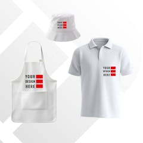

Empresas com atividade documentada nesta área
Exemplos para compreender funções e modelos de trabalho. As atividades são atribuídas às fontes oficiais consultadas; não constituem uma recomendação comercial.

TH Clothes / Organizações Biscana
Batalha, Portugal · sede da titular
Marca de vestuário promocional
A TH Clothes é detida pela Organizações Biscana. A história da marca descreve desenvolvimento de produto, stock e distribuição, sem comprovar confeção própria de todas as peças.
Ler o perfil de TH Clothes / Organizações Biscana →Fontes: TH Clothes — A marca

Roly / Gor Factory
Fortuna, Murcia, Espanha · sede da sociedade
Fornecimento de vestuário e distribuição
O site da Gor Factory descreve, para Roly, encomendas por cor e tamanho, consulta de stock e coordenação entre armazém e transportadores.
Ler o perfil de Roly / Gor Factory →Fontes: Roly — Perguntas frequentes · Roly — Identificação da sociedade
O fornecedor têxtil na cadeia
O vestuário promocional pode servir ações de comunicação e identificação. O vestuário profissional responde a um contexto de trabalho. O fornecedor pode definir modelos e disponibilizar variantes de cor e tamanho, enquanto outra entidade aplica impressão ou bordado. O uso profissional, por si só, não comprova uma função de proteção.

Marcas e disponibilidade
Numa encomenda têxtil, a quantidade global deve ser desdobrada por modelo, cor e tamanho; a disponibilidade de uma variante não prova a das restantes. Uma entrada prevista no armazém também deve ser distinguida de uma quantidade já disponível para preparar o pedido.
Da peça à personalização
A composição e a construção da peça condicionam a técnica e a área de aplicação. Uma costura, fecho ou bolso pode limitar o acesso. Antes da produção, importa definir a arte, validar uma maquete e confirmar a compatibilidade do processo. Estes são critérios gerais; os perfis não atribuem serviços de impressão que as fontes consultadas não esclarecem.
Fontes e âmbito
Fontes oficiais consultadas para as atividades atribuídas às empresas. As explicações das funções e do percurso são sínteses editoriais; não descrevem um modelo universal nem avaliam o desempenho dos fornecedores.
- TH Clothes — A marca — consulta: .
- Roly — Perguntas frequentes — consulta: .
- Roly — Identificação da sociedade — consulta: .